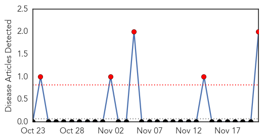
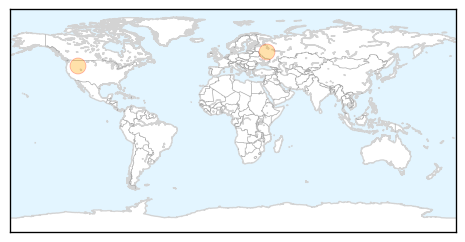
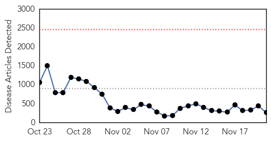
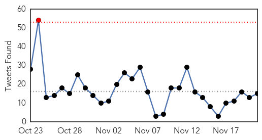

Mumps
30-Day Web Trend
5 alerts, 0 warnings

30-Day Twitter Trend
0 alerts, 0 warnings

Article Locations
Article Confidences

Top Articles:
Top Tweets:
-
No tweets found for Nov 21, 2014
Ebola
30-Day Web Trend
0 alerts, 0 warnings

30-Day Twitter Trend
1 alerts, 0 warnings

Article Locations
Article Confidences
Top Articles:
- 1.000
- Ebola Experts Warn Against Complacency, Immunity to Disease
- 1.000
- A Day in the Life of an Ebola Worker
- 1.000
- Ebola-related events in the United States and response
- 1.000
- Doctor in Mali dies of Ebola Republican American
- 1.000
- More Ugandan doctors for Ebola fight
- 1.000
- Medical center prepared for Ebola
- 1.000
- IT News Africa- Africa's Technology News Leader
- 1.000
- Worst Ebola outbreak on record tests global response
- 1.000
- Outbreak Over In DR Republic Of Congo, WHO Says
- 1.000
- Ebola Rates Down in Liberia, Outbreak Still Raging in Sierra Leone, Guinea
- 1.000
- WHO Declares End to Ebola Outbreak in DRC
- 1.000
- Zoonoses Cross Species Barrier
- 1.000
- Health Ministry tells overseas countries to quarantine Indians with suspected Ebola for three months
- 1.000
- Cayman Islands government spends $3M on Ebola preparations
- 1.000
- Global leaders warn against Ebola complacency
- 1.000
- Ebola outbreak: results uneven, UN chief says
- 1.000
- Mali Ebola Crisis Deepens with Doctor's Death
- 1.000
- Malian Ebola crisis deepens with doctor’s death
- 1.000
- Chronology: Worst Ebola outbreak on record tests global response
- 1.000
- The Ebola Epidemic Could Be Reaching A Turning Point
- 1.000
- Ebola death toll keeps rising, now 5,459
- 1.000
- Another $600 Mln Needed to Combat Ebola
- 1.000
- A Treacherous Epidemic at Hand
- 1.000
- Ebola crisis update - 21st November 2014 - Liberia
- 1.000
- A new phase in the Ebola war
- 1.000
- Ebola virus considered deadly global epidemic
- 1.000
- Doctor working in Sierra Leone is Italy's first Ebola case (Update)
- 1.000
- World Health Organization: Democratic Republic of Congo is Ebola-free
- 1.000
- Doctor dies in Mali
- 1.000
- balita.ph - Online Filipino News
- 0.999
- Ebola-infected Cuban doctor brought to Geneva
- 0.999
- Health Officials Visit UCSF to Review Preparedness to Treat Ebola Patients
- 0.999
- Chance to stop Ebola from becoming ‘nightmare’ lost in March: David L. Heymann
- 0.999
- Ebola virus devastates Liberia?s economy
- 0.999
- State leads the way on Ebola precautions — NewsWorks
- 0.999
- Two US travellers returning home from West Africa countries cleared off Ebola virus
- 0.999
- WHO declares DRC Ebola-free
- 0.999
- New York, Missouri Patients Test Negative For Ebola
- 0.999
- Homeland Security Today: DHS Grants Temporary Protected Status to Travelers from Ebola-Stricken Countries
- 0.999
- France to screen Mali arrivals for Ebola
- 0.999
- Medical Missionaries' Ebola Pullback: No More Kent Brantlys?
- 0.999
- nine charts show why it matters
- 0.999
- Ebola outbreak can be ended in 2015: UN's Ban Ki-moon
- 0.999
- Philadelphia patient does not have Ebola
- 0.999
- WHO confirms DR Congo Ebola-free status
- 0.999
- WHO declares end of Ebola outbreak in Democratic Republic of Congo - Xinhua
- 0.999
- Patient Tests Negative For Ebola In Jefferson County
- 0.999
- Leading Ebola expert says stopping the outbreak is not rocket science Vatican Radio
- 0.998
- Two dead from Ebola-like Lassa fever in Benin: Officials
- 0.998
- Guinea Is Seeing More Ebola Cases: Can The Trend Be Stopped?
Showing top 50 articles...
Top Tweets:
- 0.918
- RT: CORRECTING Ebola update: 15351 cases 5459 deaths. Mali holding at 6 cases all fatal. 588 HCW infections 337 fatal h…
- 0.878
- Growth in Ebola cases in Liberia started slowing down when there were around 3500 susp/prob/confirmed cases. Sierra Leone has had 6190.
- 0.845
- RT: Medical staff trained equipment available and proper comm. to prevent spread of Ebola and treat patients in Senegal Afri…
- 0.838
- RT: Ebola Semen Transmission FAQ http://t.co/tmp8YhchWQ via ebola AfricaStopEbola StopEbola Virus cdc who http://t.…
- 0.785
- Africa Stop Ebola/3D Family Productions Thank you!
- 0.733
- Mali: Details of the additional cases of Ebola virus disease | @who http://t.co/Z8N3T2K6WQ
- 0.724
- RT: Paul Richards- AIDS is a disease of sexual intimacy Ebola is a disease of family/care intimacy AfricaStopEbola…
- 0.671
- CDC DiseaseDetective Dan was in Sierra Leone giving local health workers the tools needed to help contain Ebola. http://t.co/YFJ9gTlsK8
- 0.592
- Guinea. Displaced by disease: 5 displacement patterns emerging from the Ebola epidemic @IDMC_Geneva http://t.co/txJyst1FFL
- 0.562
- RT: Don McNeil misrepresents Liberia´s EBOLA-response to win the MOST INCORRECT ARTICLE ABOUT EBOLA AWARD http://t.co/i2Gl61…
- 0.551
- CORRECTING Ebola update: 15351 cases 5459 deaths. Mali holding at 6 cases all fatal. 588 HCW infections 337 fatal http://t.co/foF3hxTryb
- 0.535
- RT: CDCintheField from Dan: Local health official works w/ CDC epi to plot confirmed Ebola cases on district map. http://t.co/AuN…
- 0.530
- 2014 West African Ebola outbreak: feature map | @WHO http://t.co/wyHLS9ujTt
- 0.507
- Ebola testing performed by CDC DiseaseDetective team in Sierra Leone. They tested 162 samples in total. http://t.co/G01QKKtPPq
- 0.505
- RT: Displaced by disease: 5 displacement patterns emerging from the Ebola epidemic - @reliefweb - http://t.co/Q16YGkhiIh